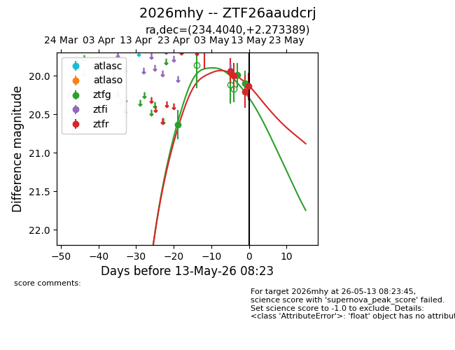
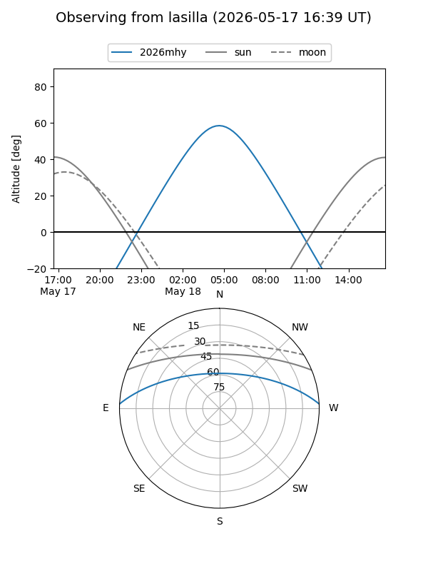
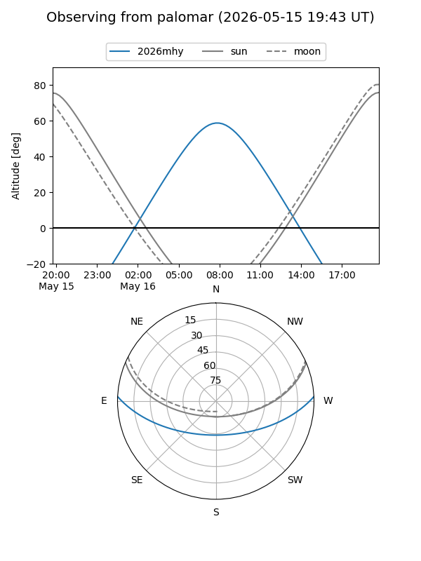
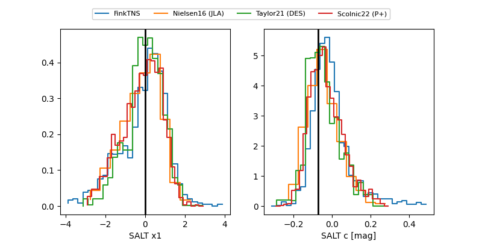

2026mhy
Target 2026mhy at 2026-05-13 08:25
Aliases and brokers:
FINK: link
Lasair: link
ALeRCE: link
TNS: link
YSE: link
alt names
ZTF26aaudcrj (ztf,fink_ztf)
2026mhy (tns,yse)
Coordinates:
equatorial (ra, dec) = 234.4040,+2.27339
equatorial (HMS+DMS) = 15:37:36.96,+02:16:24.20
galactic (l, b) = (8.1673,+43.13085)
Flags:
Photometry:
last ztfg=20.10, ztfr=20.14
3 ztfg, 4 ztfr detections
Lightcurve

Visibility


Additional plots
